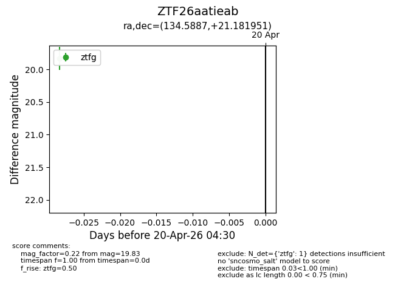
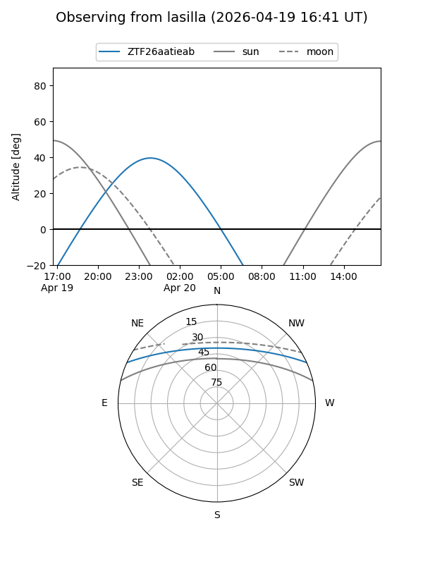
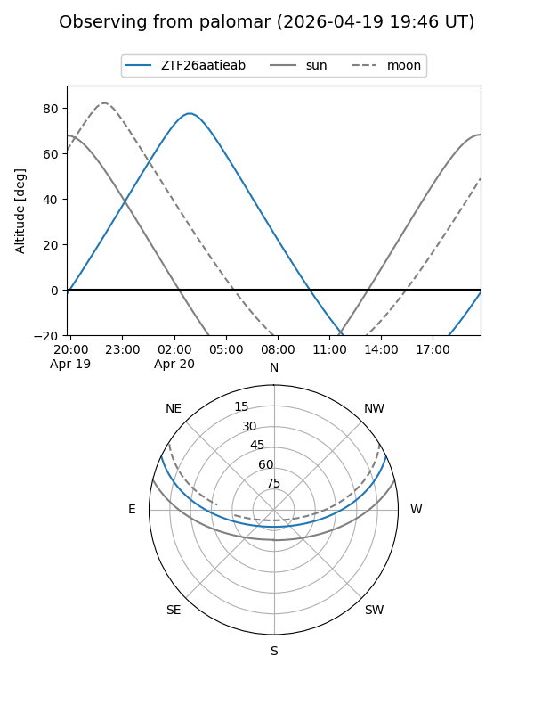

ZTF26aatieab
Target ZTF26aatieab at 2026-04-20 04:41
Aliases and brokers:
FINK: link
Lasair: link
ALeRCE: link
alt names
ZTF26aatieab (ztf,fink_ztf)
Coordinates:
equatorial (ra, dec) = 134.5887,+21.18195
equatorial (HMS+DMS) = 08:58:21.29,+21:10:55.02
galactic (l, b) = (205.8892,+36.95503)
Flags:
Photometry:
last ztfg=19.83
1 ztfg detections
Lightcurve

Visibility


Additional plots